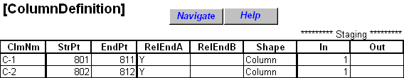

SteelBridg LRFR
Contents:
Getting Started
Data Entry
Theory
Frequently asked Questions
Examples
Truss Example
Example two span truss bridge
Truss Example: Step 1 - Define COGO points and paths on the profile grade
Truss Example: Step 2 - Define COGO points and paths not on profile grade
Truss Example: Step 3 - Define Nodal Boundary Conditions
Truss Example: Step 4 - Identify Member Lines
Truss Example: Step 5 - Define Concrete Slab
Truss Example: Step 6 - Define Materials and required shapes.
Truss Example: Step 7 - Place shapes on member lines.
Truss Example: Step 8 - Place Column Shapes
Truss Example: Step 9 - Place Truss Members
Stringer Example
Cross-Beam Example
Tables
SteelBridg LRFR
Examples
Truss Example
Truss Example: Step 8 - Place Column Shapes
View page source
Truss Example: Step 8 - Place Column Shapes
